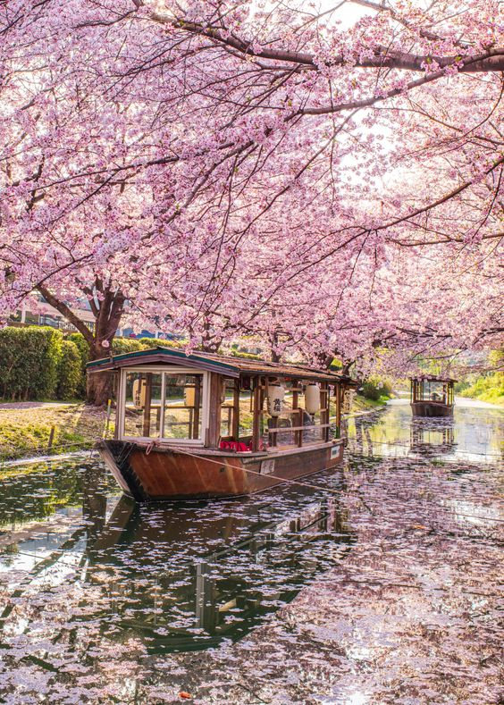
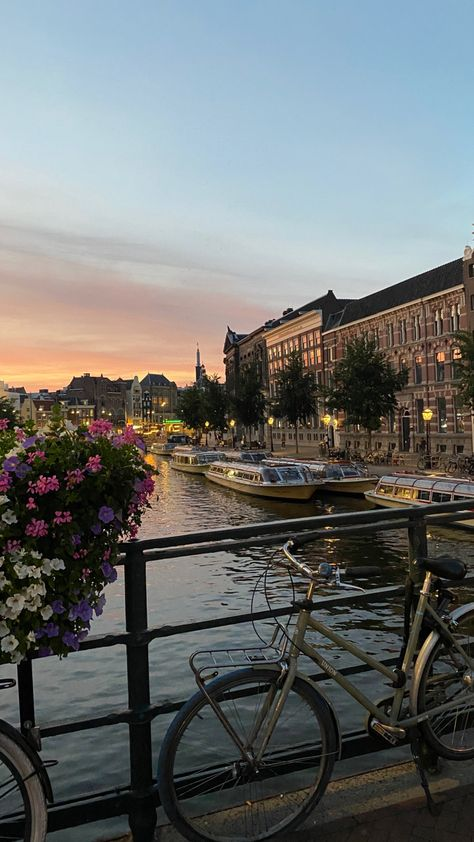
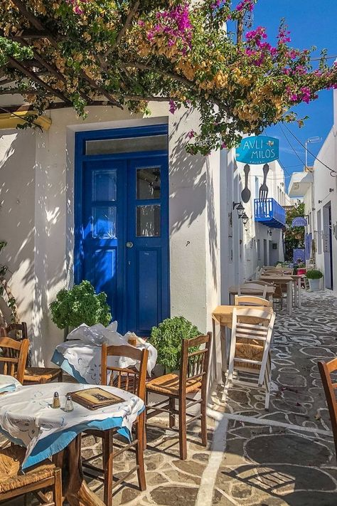
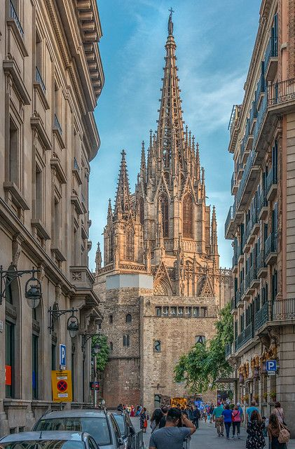

Spring is willing to start, in fact, right now, we can already percieve the very beggining of spring, there's dandelions in the park,
the wheater is getting hot, the sun is kissing our skin and our hair begins to get curly... what a magical season. In fact, I am myself
a spring baby, born in early june so, it's kinda my own season (even if my fav is autumn)
But, do you know what spring means too? yes, easter, and yes, holidays, maybe it's time to get a tan and get a new seal for our passports,
travelling is a good idea, right?
Well... here I give you some of my favourite options for our springbreak.

Kyoto, Japan
Spring in Kyoto is famous for its cherry blossoms, known as sakura. The city's temples, parks, and gardens come alive with delicate pink
and white blooms, creating a stunning backdrop for exploration. Don't miss the iconic Kiyomizu-dera and Fushimi Inari Shrine, especially
during the cherry blossom season. Plus, the weather in spring is usually mild, making it perfect for strolling through the city's historic
streets and enjoying traditional tea ceremonies.

Amsterdam, Netherlands
Springtime in Amsterdam brings colorful tulip fields in full bloom. The Keukenhof Gardens, just outside the city, are a must-visit during this
time, with millions of tulips, daffodils, and hyacinths creating a vibrant spectacle. In the city itself, you can explore the picturesque canals,
visit world-class museums like the Rijksmuseum and the Van Gogh Museum, and experience the lively atmosphere of outdoor cafes and markets.

Santorini, Greece
While summer is the peak tourist season in Greece, spring offers a more tranquil experience with comfortable weather and fewer crowds. Santorini,
with its stunning sunsets, white-washed buildings, and crystal-clear waters, is particularly enchanting in spring. You can explore the charming
villages of Oia and Fira, hike along the caldera cliffs, or relax on the island's beautiful beaches. Plus, you'll have the added bonus of enjoying
the Greek cuisine and hospitality without the summer rush.
Paris, France
Springtime in Paris is utterly charming, with blooming flowers adorning the city's parks, gardens, and boulevards. The iconic landmarks such as the
Eiffel Tower, Notre-Dame Cathedral, and the Louvre Museum are even more picturesque surrounded by blossoms. Take a leisurely stroll along the Seine
River, visit the Luxembourg Gardens, and indulge in delicious French pastries at quaint cafes. Additionally, the mild weather is perfect for exploring
the city's outdoor attractions and enjoying romantic boat rides along the Seine.

Barcelona, Spain
Spring in Barcelona offers a perfect blend of cultural experiences, stunning architecture, and pleasant weather. Explore the colorful and vibrant streets
of the Gothic Quarter, visit the architectural marvels of Antoni Gaudí including the Sagrada Família and Park Güell, and stroll along the lively promenade
of La Rambla. In spring, the city's parks, such as Parc de la Ciutadella, come alive with blooming flowers and provide excellent spots for picnics and relaxation.
Don't forget to indulge in delicious Catalan cuisine at local tapas bars and enjoy the city's vibrant nightlife. Plus, you can soak up the Mediterranean sun on
Barcelona's beautiful beaches, such as Barceloneta, without the summer crowds.
Cape Town, South Africa
Spring in Cape Town brings mild temperatures, fewer crowds, and beautiful wildflowers blooming across the countryside. It's an excellent time to explore the city's
stunning natural beauty, from hiking Table Mountain to visiting the Cape Winelands for wine tasting amid picturesque vineyards. Plus, you can embark on a memorable
safari adventure to see the Big Five in nearby game reserves such as Kruger National Park or Addo Elephant Park. Don't forget to visit the vibrant neighborhoods of
Cape Town, enjoy the local cuisine, and soak up the laid-back atmosphere of this coastal gem.